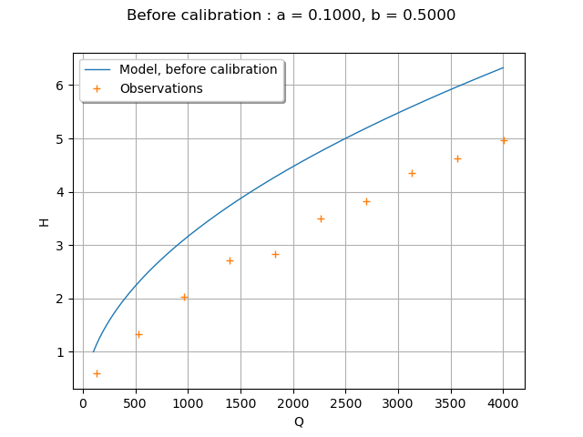
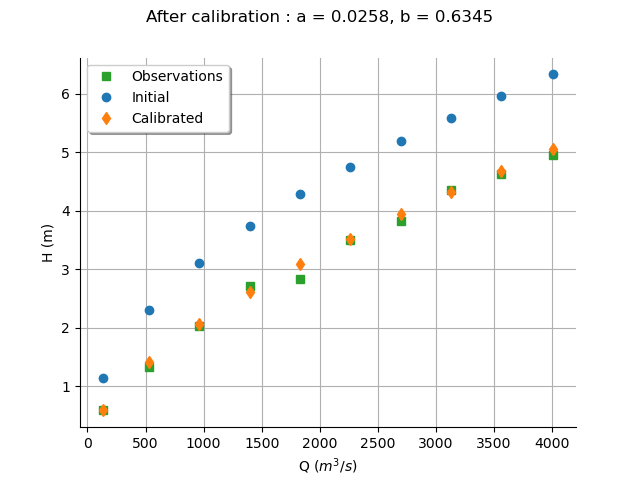
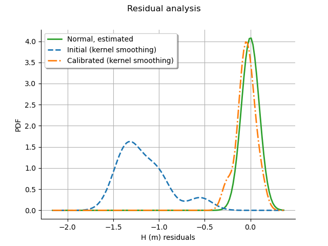

Note
Go to the end to download the full example code
Calibrate a parametric model: a quick-start guide to calibration¶
In this example we present the calibration of a parametric module. To do this, we show how to define the observations. Then we create a Python function and create the parametric model that is to be calibrated. Finally, we calibrate the parameters of the model using least squares and we validate the hypotheses of the method.
Please read Code calibration for more details on code calibration and least squares. In this example we are interested in the calibration of the flooding model. Once the reader has mastered this example, the calibration of the Chaboche mechanical model may be considered to make an in-depth study of these algorithms. The goal of this script is to be relatively small, so please consider reading the other examples if this is relevant.
Parameters to calibrate and observations¶
The parametric model is:

The vector of parameters to calibrate is:

We consider a sample size equal to:

The observations are the couples  , i.e. each observation is a
couple made of the flowrate and the corresponding river height.
, i.e. each observation is a
couple made of the flowrate and the corresponding river height.
We choose to calibrate this model using non linear least squares, because this is a relatively flexible method.
import openturns as ot
import openturns.viewer as otv
from openturns.usecases import flood_model
ot.Log.Show(ot.Log.NONE)
Define the observations¶
In practice, we generally use a data set which has been obtained from
measurements.
This data set can be loaded using e.g. ImportFromCSVFile().
Here we import the data from the
FloodModel
class.
fm = flood_model.FloodModel()
Qobs = fm.data[:, 0]
Hobs = fm.data[:, 1]
nbobs = fm.data.getSize()
fm.data
Create the physical model¶
We define the model  which has 3 inputs and one output H.
This model has a parametric shape that may correspond to the data,
which has some power shape.
In the model, the parameters are a and b, the input is Q
and the output is H:
- Q : the flowrate of the river,
- a, b : the parameters.
which has 3 inputs and one output H.
This model has a parametric shape that may correspond to the data,
which has some power shape.
In the model, the parameters are a and b, the input is Q
and the output is H:
- Q : the flowrate of the river,
- a, b : the parameters.
def functionSimpleFlooding(X):
Q, a, b = X
H = a * Q ** b
return [H]
g = ot.PythonFunction(3, 1, functionSimpleFlooding)
g = ot.MemoizeFunction(g)
g.setInputDescription(["Q", "a", "b"])
g.setOutputDescription(["H"])
Setting the calibration parameters¶
Define the value of the reference values of the  parameter.
There is no particular method to set these values: we used
trial-and-error to see the order of magnitude of the parameters.
parameter.
There is no particular method to set these values: we used
trial-and-error to see the order of magnitude of the parameters.
aInitial = 0.1
bInitial = 0.5
thetaPrior = [aInitial, bInitial]
Create the parametric function¶
In the physical model, the inputs and parameters are ordered as presented in the next table. Notice that there are no parameters in the physical model.
Index |
Input variable |
|---|---|
0 |
Q |
1 |
a |
2 |
b |
Index |
Parameter |
|---|---|
∅ |
∅ |
Table 1. Indices and names of the inputs and parameters of the physical model.
print("Physical Model Inputs:", g.getInputDescription())
print("Physical Model Parameters:", g.getParameterDescription())
Physical Model Inputs: [Q,a,b]
Physical Model Parameters: []
In order to perform calibration, we have to define a parametric model,
with observed inputs and parameters to calibrate.
In order to do this, we create a ParametricFunction
where the parameters are a and b which have the indices 1 and
and 2 in the physical model.
Please read Create a parametric function
for more details on this topic.
Index |
Input variable |
|---|---|
0 |
Q |
Index |
Parameter |
|---|---|
0 |
a |
1 |
b |
Table 2. Indices and names of the inputs and parameters of the parametric model.
The following statement create the calibrated function from the model.
The calibrated parameters  ,
,  are at
indices 1, 2 in the inputs arguments of the model.
are at
indices 1, 2 in the inputs arguments of the model.
calibratedIndices = [1, 2]
mycf = ot.ParametricFunction(g, calibratedIndices, thetaPrior)
Plot the Y observations versus the X observations.
title = "Before calibration : a = %.4f, b = %.4f" % (aInitial, bInitial)
graph = ot.Graph(title, "Q", "H", True)
# Plot the model before calibration
curve = mycf.draw(100.0, 4000.0).getDrawable(0)
curve.setLegend("Model, before calibration")
graph.add(curve)
# Plot the noisy observations
cloud = ot.Cloud(Qobs, Hobs)
cloud.setLegend("Observations")
graph.add(cloud)
#
graph.setColors(ot.Drawable.BuildDefaultPalette(2))
graph.setLegendPosition("topleft")
view = otv.View(graph)

Wee see that the model does not fit to the data. The goal of calibration is to find which parameter best fit to the observations.
Calibration with non linear least squares¶
The NonLinearLeastSquaresCalibration class performs
non linear least squares calibration by minimizing the squared Euclidian norm
between the predictions and the observations.
algo = ot.NonLinearLeastSquaresCalibration(mycf, Qobs, Hobs, thetaPrior)
The run() method computes
the solution of the problem.
algo.run()
calibrationResult = algo.getResult()
Analysis of the results¶
The getParameterMAP() method returns the
maximum of the posterior distribution of .
thetaMAP = calibrationResult.getParameterMAP()
print(thetaMAP)
[0.0258034,0.634465]
In order to see if the parameters fit the data, we plot the input depending on the output before and after calibration.
# sphinx_gallery_thumbnail_number = 2
graph = calibrationResult.drawObservationsVsInputs()
aEstimated, bEstimated = thetaMAP
title = "After calibration : a = %.4f, b = %.4f" % (aEstimated, bEstimated)
graph.setTitle(title)
graph.setLegendPosition("topleft")
view = otv.View(graph)

One of the hypotheses of the least squares method is that the residuals follow a normal distribution: the next cell checks if this hypothesis is satisfied here.
graph = calibrationResult.drawResiduals()
graph.setLegendPosition("topleft")
view = otv.View(graph)

The analysis of the residuals shows that the distribution is centered on zero and symmetric. This indicates that the calibration performed well. Moreover, the distribution of the residuals is close to being Gaussian.
Remark. The logarithm of the height is:
![\log(H) = \log(a) + b \log(Q).]()
Hence, transforming the data on a logarithmic scale leads to a parametric model that is linear in the parameters. The parameters of this transformed model can be estimated using linear linear squares, which may lead to a significant improvement in terms of number of function evaluations.
otv.View.ShowAll()